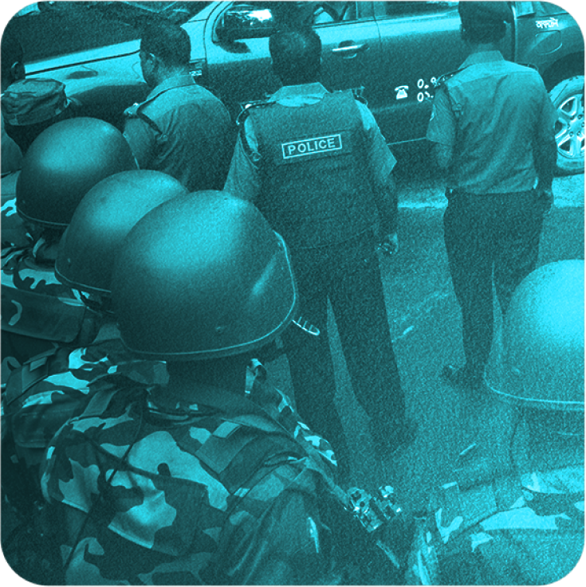
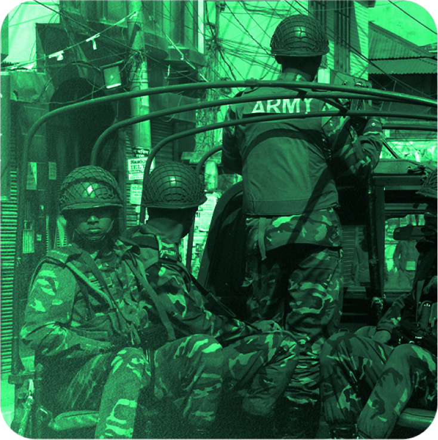

Since the Bangladesh Awami League returned to power in 2009, security forces in Bangladesh killed about 2,600 people as of early last year in alleged extrajudicial executions, custodial torture and direct firing at protesters, according to an analysis of data compiled by rights groups and independently verified by Netra News.
A vast majority of the killings appear deliberate and targeted, often meted out after security forces had the subjects already under their custody, thus meeting the threshold of extrajudicial executions.
Bangladesh Police are responsible for about 59% of the total killings and 56% of those that bear some hallmarks of extrajudicial executions. Added together with the Rapid Action Battalion (RAB), the civilian force accounts for over 90% of all deaths.
The number of killings sharply increased during, before, and after the national elections held in 2014 and 2018, widely condemned as uninclusive and fraudulent. The location-wise data also reveals the widespread targeting of the Rohingya refugees during a Philippines-style “war on drugs”.
Extrajudicial killings are not new to Bangladesh, tracing back to the immediate post-independence period of the country. While preceding governments, including those led by the Bangladesh Nationalist Party (BNP), now in the opposition, and the Caretaker Government, had their share of such allegations, these incidents surged under Prime Minister Sheikh Hasina, averaging around 200 killings per year.
The press in Bangladesh has largely relayed official narratives provided by the security forces, who claim to have killed suspects in “crossfires” or “gunfights”. Ironically, their assertion also meant that the occurrence of the deaths was uncontested, giving credence to press reports that formed the basis of the dataset used for this story. Netra News verified all but 49 of the 2,598 incidents gathered by the Asian Human Rights Commission in Hong Kong and has decided to release a shortened and refined version of the dataset alongside the story.
Prime Minister Sheikh Hasina’s reign has seen an increasingly autocratic shift, with substantial opposition to her governance quashed. Widely followed democracy indices by V-Dem and Bertelsmann Stiftung now categorize Bangladesh as an autocracy.
The Bangladesh government defends these killings as the result of the legitimate use of force, but domestic and international rights groups, victim families, and independent press reports strongly contradict this characterization.
In a recent investigation by Netra News and Deutsche Welle, the German public broadcaster, two former RAB commanders admitted to carrying out extrajudicial killings and implicated the highest levels of the Bangladesh government in some of them.
In 2021, the United States government imposed economic and other sanctions on the Rapid Action Battalion (RAB), an elite police unit, and its current and former czars over reports of its involvement with numerous extrajudicial killings. While Netra News has analyzed incidents dating prior to April 2022, rights groups noted a dramatic drop in extrajudicial killings since the announcement of the sanctions.
The Agents of Death
Netra News, based on press descriptions, has classified the killings into: i) potentially targeted or premeditated killings of detained individuals, ii) deaths resulting from law enforcement’s excessive or justified responses to protest or violence, iii) fatalities from alleged in-custody torture, and iv) other inadvertent deaths.
More than 80% — or 2,095 — of the total 2597 killings documented in the dataset bear some hallmarks of targeted murders, i.e., carried out after the individuals were admittedly or allegedly in the custody of the respective security forces. Of them, 195 are allegedly torture-related casualties.
Regular police units alone carried out more than half, or 59%, of the 2597 killings recorded in this period. In addition, policemen participated in joint operations with other forces, including RAB and the Border Guard Bangladesh (BGB), resulting in the deaths of an additional 142 people. In total, police members were, in one way or another, implicated in more than 1,600 deaths — of which 74% were recorded as “crossfire” or “gunfight” deaths.
Of the 2,095 killings that appear to be targeted extrajudicial executions, regular police units were singlehandedly responsible for 1,191 or 56%, and dozens of others in collaboration with other agencies or RAB.
Combined with RAB, the single most lethal unit, regular police units and RAB were implicated in 2,421 — or 93.22% — of all killings.
RAB is technically under the police but enjoys operational freedom and is essentially outside the purview of the police headquarters. About 13,000 members dorn RAB outfits, but other police units collectively have about 212,000 personnel, according to a 2020 figure.
The RAB’s head is a senior police official, but the commanders of its 15 operational battalions are mid-ranking military officers. Unlike other police units, RAB maintains a separate press office that highlights its success in eliminating “criminals”, which made it easier for researchers to attribute the killings to the unit.
And when considered as a unit of a greater force, no other police unit surpassed the RAB in terms of killings. Different battalions of RAB carried out more than 7,00 killings that bear the signs of extrajudicial executions. In addition, the elite unit spearheaded or collaborated in operations that resulted in roughly 100 additional casualties.
Although the total number of casualties by RAB is less than that caused by regular police, its propensity for extrajudicial killings is more pronounced. Despite the police force being 16 times larger in staff size, its total number of killings is only 2.5 times greater than RAB’s. This suggests that on a per capita basis, RAB’s killing rate is sixfold compared to regular police.
In addition, a staggering 95% of deaths attributed to RAB carry indications of being premeditated assassinations, in contrast to the police’s 74%.
|
|
|
|
|

|

|
|
Another key player is the Border Guard Bangladesh (BGB). The BGB is responsible for securing the country’s border, but in recent years, the agency — led exclusively by officers deputized from the military — has increasingly used lethal means to eliminate seemingly premeditated targets.
Members of the border forces killed 141 people in solo operations, 101 of whom appear to have been under their custody beforehand, in addition to taking part in joint operations that caused more than 70 additional lethal casualties.
Of all documented cases, as many as 1,674 casualties were recorded to have taken place in distinct events. The remaining 919 deaths occurred in 358 multiple-casualty incidents, in each of which more than one person was killed.
With a few exceptions, all victims appear to be men. Of the 2,000 victims whose ages were documented, around 55% were aged between 30 and 45.
Ballots & Bullets
Since 2009, Bangladesh conducted two elections in 2014 and 2018, both mired in controversy. The 2014 elections were boycotted by opposition parties, allowing the ruling party a largely uncontested victory. Despite the opposition’s participation in the 2018 elections, the ruling party clinched over 96% of the parliamentary seats in a blatant display of North Korean-esque vote rigging.
The analysis indicates a sharp spike in killings around these election periods.
In 2013, as opposition protests escalated in anticipation of the upcoming elections demanding a non-partisan interim government, as had been the norm, fatalities caused by security forces quadrupled from the previous year, reaching 270. The Jamaat-e-Islami, an Islamist party then allied with the BNP, waged separate but violent protests against death penalties imposed on some of its top leaders by a newly set-up tribunal, resulting in an equally, if not more, brutal response by security forces.
The election year of 2014 and its subsequent year, 2015, also witnessed persistently high casualties caused by security forces, tallying 172 and 186 respectively, as the BNP and its allies attempted to reignite election protests and were met with harsh crackdowns.
From 2013 to 2017, an annual average of 192 individuals were killed by security agencies. This already alarming figure rose sharply in 2018, an election year that coincided with the government’s declared war on drugs.
With 465 fatalities that year, the year of 2018 was also the deadliest ever recorded. There was a 242% increase compared to the prior five-year average. Though this trajectory subsided in subsequent years, the numbers remained troublingly high: 391 and 223 casualties for the next two years, respectively.
By Nazmul Ahasan · Source: Asian Human Rights Commission
What distinguishes the 2018 period from 2013 is the alarming rate of apparent extrajudicial killings. In 2013, only 27% (73 of 2701) of the deaths seemed premeditated or targeted.
By stark contrast, in 2018, over 98% (457 out of 465) of the fatalities appeared to be targeted as victims were reportedly or allegedly detained prior to their deaths. This pattern of a high ratio of extrajudicial casualties continued in 2019 and 2020.
Killing Hotspots
A year-by-year analysis of the locations where the killings took place also revealed astonishing findings. Given that Bangladesh lacks a uniform address system, the study refined its data down to the sub-district level.
2013 Adjustment conditions and distress
Struggling to adapt to pregnancy or motherhood.
Affects 150-300 out of every 1,000 mothers
2014 Adjustment conditions and distress
Existing mental illnesses, like schizophrenia or bipolar disorder, which can resurface or worsen during pregnancy or after giving birth.
Affects 150-300 out of every 1,000 mothers
2015 Adjustment conditions and distress
Struggling to adapt to pregnancy or motherhood.
Affects 150-300 out of every 1,000 mothers
2016 Adjustment conditions and distress
Struggling to adapt to pregnancy or motherhood.
Affects 150-300 out of every 1,000 mothers
2017 Adjustment conditions and distress
Struggling to adapt to pregnancy or motherhood.
Affects 150-300 out of every 1,000 mothers
2018 Adjustment conditions and distress
Struggling to adapt to pregnancy or motherhood.
Affects 150-300 out of every 1,000 mothers
2019 Adjustment conditions and distress
Struggling to adapt to pregnancy or motherhood.
Affects 150-300 out of every 1,000 mothers
2020 Adjustment conditions and distress
Struggling to adapt to pregnancy or motherhood.
Affects 150-300 out of every 1,000 mothers
Before 2018, the pattern of killings was distributed throughout the country, although some regional patterns emerged. In the Awami League government's initial years, western and southwestern districts, particularly within the Khulna division, experienced the deaths of individuals reportedly linked to armed leftist factions. The trend of targeting leftist extremist groups had begun during the BNP regime when the RAB was formed.
Similarly, the Chittagong Hill Tracts in eastern Bangladesh consistently observed extrajudicial executions of indigenous males, purportedly affiliated with regional political and militant groups. A significant portion of these deaths were attributed to the army, which has historically maintained a dominant presence there.
However, in 2019, a year after the government launched its anti-drug campaign, the security forces turned their attention to Tekanf of Cox’s Bazar: Of the 391 deaths in Bangladesh that year, 113 victims hailed from this small sub-district, recognized as a major drug conduit from neighbouring Myanmar. In contrast, prior to 2019, the sub-district recorded fewer than 30 security force-related deaths from 2013 to 2018.
Adjacent sub-districts in Cox’s Bazar, like Chokoria and Maheshkhali, also experienced a heightened frequency of deadly incidents during this time.
Significantly, the 2019 casualties included 59 Rohingya refugees residing in the overcrowded refugee camps of Cox’s Bazar. In the subsequent two years, another 56 Rohingya refugees met the same fate. It’s worth noting that before 2019, no Rohingya refugees had been killed by security forces in Bangladesh, although they had arrived two years earlier.
Every district in Bangladesh experienced at least one fatality, though certain districts had higher counts. In actual numbers, Dhaka had the most casualties, with 338 deaths.
However, when adjusted for population, Cox’s Bazar had a higher rate, with approximately 11 deaths for every 100,000 inhabitants. Both Bagerhat and Kushtia reported over six fatalities per 100,000 residents.
Labels that Kill
In an overwhelming majority of the cases that fit the pattern of likely extrajudicial executions, the respective security forces told reporters that the victims had a criminal history.
Experts have long argued that security forces leverage these negative connotations to justify their actions. The implication is that whether an individual was killed in a targeted operation or during a legitimate confrontation, they deserved their fate.
The label “crime” was associated with about 1,200 of the cases, while the suggestion of “drugs” or “extremism” (either left-wing or Islamist) was present in 638 and 192 cases, respectively. In some instances, these descriptors overlapped; for example, some individuals were labelled both as a criminal and a drug trader.
Such instances align with the textbook definition of extrajudicial executions, which refers to the targeted and deliberate killing of someone who might have a criminal background, without any judicial sanction.
But it’s difficult to accept police claims without scepticism.
Many journalists didn't challenge the narratives that subjects had a previous criminal history. When some did probe deeper, they discovered that, on occasion, law enforcement would file charges against these individuals on the day of the incident itself.
In numerous cases, it’s probable that the subjects didn’t have any prior felony charges. They were killed either because they refused to bribe the security forces, their adversaries paid off the forces to settle personal scores, or due to their anti-government political position. For instance, in the notorious 7-murder case in Narayanganj in 2014, the security forces were primarily motivated by financial gain. Furthermore, allegations that victims were tortured to death in custody often accompanied claims that their failure to bribe security forces led to their deaths.
In approximately 300 instances, the subjects appeared to have definitive links to opposition parties; 213 were killed by police fire, 70 died in crossfires or confrontations, and an additional 50 perished in neutral protests, labour rallies or had ties with non-partisan movements.
Twenty-seven individuals are documented to have died during protests led by the Hefajat-e-Islami, an Islamist pressure group. This count doesn’t include fatalities from Hefajat’s 5th of May rally in 2013, as detailed records are missing or contestedspan 2.
Roughly 192 individuals were branded as extremists, spanning both Islamist and left-wing ideologies. Such categorization becomes especially murky since journalists rarely scrutinise its veracity, given the sensitivity of the subject matter.
The Official Line
Netra News has reached out to Bangladesh’s Ministry of Home Affairs, which supervises the law enforcement forces, but has not received a response.
Bangladesh authorities have long denied that its security forces carry out extrajudicial executions.
When Michelle Bachelet, the former U.N. High Commissioner for Human Rights, visited Bangladesh last year and addressed the allegations of extrajudicial executions by the nation’s security forces, Foreign Minister AK Abdul Momen responded by saying that since 2008, when the Awami League government came back to power, “there have been no reports of such killings in the country.”
However, as early as 2011, Prime Minister Sheikh Hasina acknowledged the actions of her forces. In February 2011, she told reporters, “It cannot be changed overnight. If people had spoken out against it as fervently as they do now, the practice wouldn't have persisted for so long.”
In early April, when approached for comments by Netra News and Deutsche Welle for a story on extrajudicial killings, Bangladesh’s Ministry of Home Affairs responded, “Upon receiving any such allegations, the Ministry ensures that each incident is investigated by an independent Magistrate. According to the results of these investigations, the claims made often lack authenticity.”
However, the magistrates are neither “independent” nor do they “investigate” the killings. These magistrates are junior executive bureaucrats or public servants operating directly under the government's stringent control. Multiple rights investigators have pointed out that these magistrates frequently rubber-stamp the so-called investigative reports even before the actual killings occur.
Even then, the Bangladesh government provides no evidence to back up its own claims of conducting independent investigations into the allegations. For example, the reports produced by the magistrates, along with any other related documents (such as testimonies or interviews of involved officials), remain undisclosed, if they exist at all, to the general public. Often, even basic information, like police and medical reports, is withheld from the families.
Methodology
A local human rights group, which declined to be named in the story due to fears of the safety of its staff, kept track of individual cases that the AHRC collated in several spreadsheets over the years. The majority of these cases cited press reports, which predominantly relayed — and were confirmed by — the accounts of the security forces. Only a select few were documented firsthand by field workers.
It’s essential to note that Netra News neither undertook nor feasibly could have conducted individual investigations into every case. Our analysis prioritized statements from family members and eyewitness reports over those from security agencies. However, our researchers managed to verify all but 49 cases using press reports separately and subsequently updated any incomplete data. In the table, we provided a link to the archived source material.
The “connotation” and “identity” columns in the table don’t aim to present definitive truths. Instead, the connotations draw from post-event statements made by security forces about the victims, providing readers with an insight into the justifications offered by these forces. In terms of recording the victims’ names, we excluded aliases and opted for fuller names.
Given that Bangladesh lacks standardized address formats like ZIP codes, Netra News adapted village or
union-level location information to match sub-district or district levels. For the mapping exercise, we
employed
the R library tidyverse to generate the coordinates for all sub-districts. We
retained coordinates with a
97%-100% confidence level, manually adjusting any outliers. To visually represent data, we segmented
Bangladesh’s map into numerous hex grids. These grids source data from the geo-coordinates,
presenting
vertical bars proportionate to the casualty count in the represented geographic region.
In order to attribute casualties to specific security forces, incidents involving a single agency were linked directly to that entity. Although the RAB is technically a police unit, we treated it as a separate entity due to its de facto operational independence. Larger security forces like the police, RAB, BGB, and the army were catalogued individually. In contrast, lesser-involved forces, such as the coastguard and prisons department, were collectively categorized as “other”. Any incidents with the involvement of multiple security forces were labelled as “joint”.
Footnotes
1The 2013 figures do not include those allegedly killed during the May 5th rally by Hefazat-e-Islam. Had they been included, the share of the targeted killings would be even less.↩
2The original AHRC dataset contained an entry of 50 unidentified individuals. These individuals were allegedly killed during the dispersal of Hefajat-e-Islami activists from their sit-in in Dhaka on May 5, 2013. However, no information was available to back up the count. While an undetermined number of casualties during this event is acknowledged, our analysis only incorporated incidents that were either verified or unchallenged in their occurrence.↩
Reporting, data analysis, and web development by Nazmul Ahasan, who has tackled the project as a Master of Journalism student at UC Berkeley Graduate School of Journalism; research by Nazmul Ahasan, Jahidur Rahman, Miraj Ahmed, Toriqur Rahman, Tahmidul Islam and Mohammad Ali, data visualization by Nazmul Ahasan, Peter Aldhous and Kamal Hosein, copy editing by Tasneem Khalil, and graphic design and illustration by Netra News.
Web design and visualization editing by Soo Oh, lecturer at UC Berkeley Graduate School of Journalism and Data Editor at The Markup, Yoli Martinez, lecturer at UC Berkeley and Visual Storytelling Engineer at The Washington Post, and Peter Aldhous, former lecturer of data journalism at UC Berkeley.